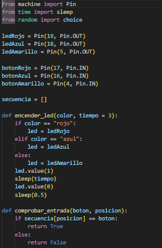
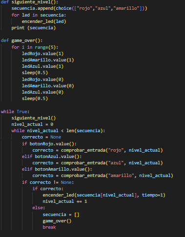

This circuit is for Simon Says. The ESP32 controls three LEDs of different colors (red, blue, and yellow), which light up in a sequence that the player must memorize. Each LED has a button of the same color. When the ESP32 displays a sequence of lights, the player must repeat it by pressing the buttons in the same order. If the player gets it right, the sequence becomes longer and more challenging. The resistors protect the LEDs and ensure the buttons work correctly, allowing the ESP32 to detect when each one is pressed.
Here you can see the circuit in Wokwi:
Look in WokwiThe code assigns each button and led a pin, also, it makes a list called "secuencia", which lets you play the game.
The program defines functions to turn on the LEDs according to the specified color and time, check if the button pressed matches the correct color in the sequence, advance to the next level by adding a new random color, and show the end of the game by lighting up all the LEDs. In the main loop, the ESP32 displays the sequence to the player and waits for them to repeat the pattern using the buttons; if the player makes a mistake, the "game over" function is triggered and the game restarts, but if they get it right, the sequence gets longer and the challenge continues.
